Show the code
pacman::p_load(sf, tmap, spdep, ClustGeo, rgdal, cluster, NbClust, factoextra, funModeling, patchwork, tidyverse, heatmaply, corrplot, ggpubr, GGally)Water is an important resource to mankind. Clean and accessible water is critical to human health. It provides a healthy environment, a sustainable economy, reduces poverty and ensures peace and security. Yet over 40% of the global population does not have access to sufficient clean water. The lack of water poses a major threat to several sectors, including food security. Agriculture uses about 70% of the world’s accessible freshwater.
Developing countries are most affected by water shortages and poor water quality. Up to 80% of illnesses in the developing world are linked to inadequate water and sanitation. Despite technological advancement, providing clean water to the rural community is still a major development issues in many countries globally, especially countries in the Africa continent.
Poor access to improved water and sanitation in Nigeria remains a major contributing factor to high morbidity and mortality rates among children under five. The use of contaminated drinking water and poor sanitary conditions result in increased vulnerability to water-borne diseases, including diarrhoea which leads to deaths of more than 70,000 children under five annually.
Geospatial analytics hold tremendous potential to address this complex problem. In this study, we aim to regionalise Nigeria by using the following measures:
Total number of functional water points
Total number of nonfunctional water points
Percentage of functional water points
Percentage of non-functional water points
Percentage of main water point technology (i.e. Hand Pump)
Percentage of usage capacity (i.e. < 1000, >=1000)
Percentage of rural water points
The R packages we’ll use for this analysis are:
For Geographical Analysis and Visualisation the packages used are:
sf - used for importing, managing, and processing geospatial data
tmap- used for creating thematic maps for spatial data visualisaion, such as choropleth and bubble maps
spdep - provides a collect of functions to create spatial weights matrix objects from polygons and point features.
ClustGeo- Ward-like hierarchical clustering algorithm including spatial/geographical constraints.
rgdal - Provides bindings to the ‘Geospatial’ Data Abstraction Library (‘GDAL’) and access to projection/transformation operations from the ‘PROJ’ library.
For Traditional Clustering Algorithm the packages used are:
cluster - Provides functions to “Find Groups in Data” for Cluster Analysis
NbClust - Determining the Best Number of Clusters in a Data Set.
factoextra - Used to extract and Visualize the Results of Multivariate Data Analyses
For Data Wrangling and Simple Visualisation the packages used are:
funModeling - Used for rapid Exploratory Data Analysis
patchwork - Combine separate ggplots into the same graphic.
tidyverse - Common but important collection of packages for data science tasks
hearmaply - Cluster heatmap based on plotly.
corrplot - A graphical display of a correlation matrix, confidence interval.
GGally - Used for parallel coordinate plots
Two data sets will be used in this study:
Nigeria water point data file compiled in WPDx Data Standard from Humanitarian Data Exchange Portal
Nigeria Administraive boundary data WPDx Global Data Repositories
Note: The websites provides the data in various format for exporting, however for GIS analysis, we should always try to use the shp format whenever available. csv is actually a very base raw data format that requires more processing before it can be used for analysis
We would start by using st_read() and filter() to import the water point data. st_read() is used to read in the data file on the computer while filetr() is necessary to only extract the data for the region of study that we require. In this case, we are only interested in Nigeria
Now, we would import the Nigeria LGA Boundary data into our R environment by using the code chunk below
Note: Nigeria has a few of her own EPSG like 26391 for West Belt, 26392 for Mid belt and 26393 for East belt. Later we would examine if we need to transform the EPSG before further analysis. right now it’s best not to transform anything to avoid missing data.
Data wrangling is the process of removing errors and combining complex data sets to make them more accessible and easier to analyze. Due to the rapid expansion of the amount of data and data sources available today, storing and organizing large quantities of data for analysis is becoming increasingly necessary.
1st thing we want to check for is duplicate or errorenous entries. To do this, we use a convenient function from the tidyverse package called duplicated(). We want to do this early to make sure that any further wrangling later on will not miss any data or cause any errors
We can see that there are 6 entries which have the same name as another 6 entries. This is likely because at ADM2 some of the local government areas (LGAs) are overlapped across 2 states at the ADM1 level. To check their exact position in the data file, we use the function which() as follows
A few options were considered here.
(1) the cleanest way is to download the ADM1 map and import it into R for intersecting with our ADM2 data, however this approach seems to require much more R coding knowledge than i currently have
(2) Compare it with google maps, I know some of our classmates claimed to be using this approach, however i can’t find any information on google maps that cleanly differentiates ADM1
(3) I ended up double checking the current data i have and found that the water point data set already had both ADM1 and ADM2 data. i did a manual comparison of the geometry data between NGA and WP to identify the closest match and updated the NGA data set accordingly.
the above code was used to create a temp variable to facilitate the checks which was subsequently checked with the view() function in RStudio as shown below:
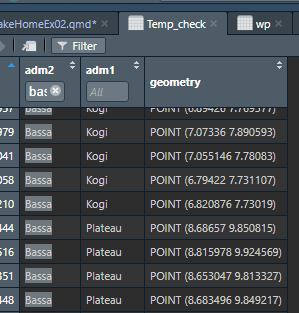
NGA’s entry for Bassa:
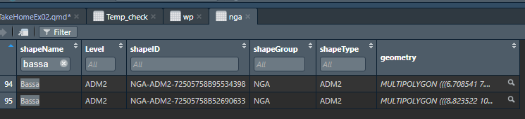
We can observe that the geometry coordinates can be used to identify the duplicate entries. we then use the subsequent code chunk to update the entries in NGA
nga$shapeName[94] <- "Bassa, Kogi"
nga$shapeName[95] <- "Bassa, Plateau"
nga$shapeName[304] <- "Ifelodun, Kwara"
nga$shapeName[305] <- "Ifelodun, Osun"
nga$shapeName[355] <- "Irepodun, Kwara"
nga$shapeName[356] <- "Irepodun, Osun"
nga$shapeName[519] <- "Nassarawa, Kano"
nga$shapeName[546] <- "Obi, Benue"
nga$shapeName[547] <- "Obi, Nasarawa"
nga$shapeName[693] <- "Surulere, Lagos"
nga$shapeName[694] <- "Surulere, Oyo"We now proceed to check the rest of the variables which are of importance to us. they are:
| Data | Variable Name | Data Type |
|---|---|---|
| Water point status | status_cle | Nominal/string |
| Water point technology | X_water_tec | Nominal/string |
| Water point capacity | usage_cap | Numeric Continous |
| Water point location | is_urban | Boolean |
We will look at the distribution of the variables using functions from the funModeling package. freq() would be used for categorical data and plot_num() would be used for numerical data.
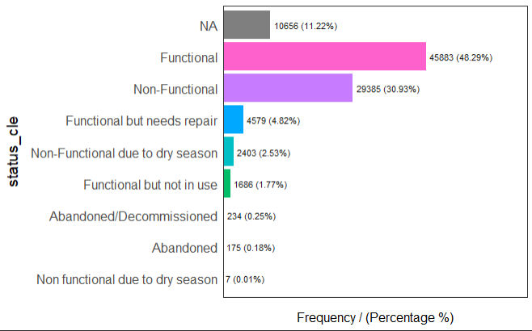
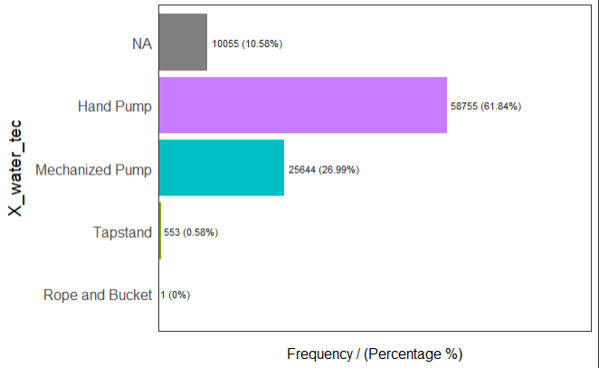
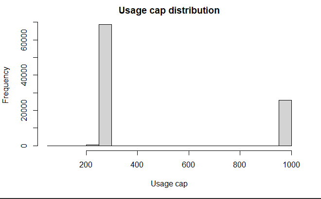
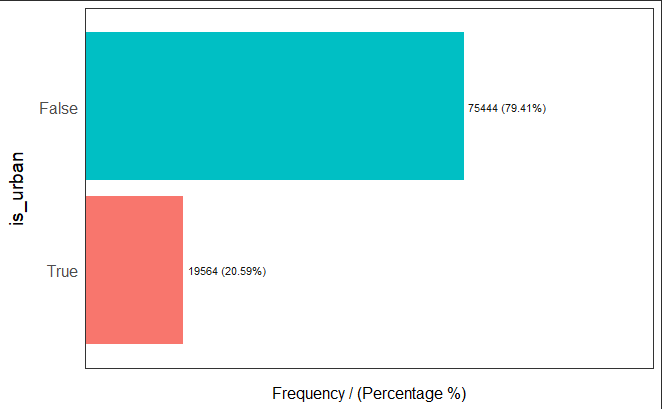
When viewing the nga data, we had observed that the data set contains NA values in status_cle and X_water_tec. these values have to be removed in order for us to categorise the values properly. we will be using replace_na() to recoding NA values into string
We also noticed that there are duplicate entries in status_cle that could be safely assumed to be refering to the same status. ‘Non functional due to dry season’ and ‘Non-functional due to dry season’. we will correct it by using recode() from dplyr package
We now double check the status_cle data again
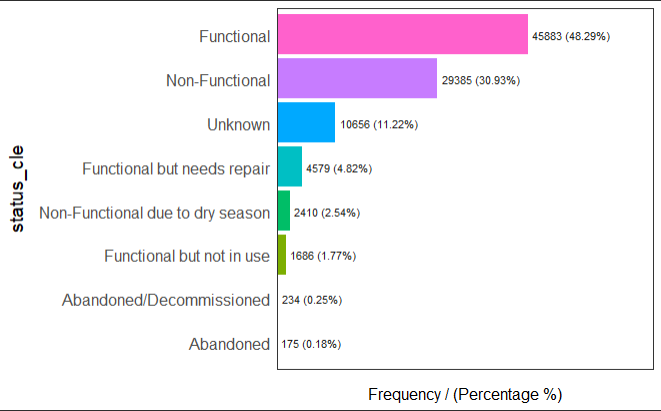
Now that the basic data is cleaned up, we now move on to exploratory data analysis and examine the information we need to derive.
Recalling he objective of this study, these are the variables that we are interested to explore
Total number of functional water points
Total number of nonfunctional water points
Percentage of functional water points
Percentage of non-functional water points
Percentage of main water point technology (i.e. Hand Pump)
Percentage of usage capacity (i.e. < 1000, >=1000)
Percentage of rural water points
We will direct derive the intermediate values that are required to calculate the final variables.
For this study, we will categorise the ‘function’, ‘functional but not in use’ and ‘functional but needs repair together under ’Functional’
For this study, we will categorise the ‘Non-function’, ‘Abandoned/Decommissioned ’Abandoned’, ‘Non-Functional due to dry season’ together under ‘Non-Functional’. ‘Unknown’ has been omitted
Hand Pumps and Mechanized Pumps already make up 88.83% of the data. we would be omitting the unknowns, tapstand as well as rope and bucket
we would seperate the usage capacity into two categories, usage capacity below 1000 and usage capacity at 1000 or above.
This variable is already neatly separated into is_rural true or false, so we simply place them into two variables
The water point data set consists of the point location of water point in Nigeria, however we are are interested in analying the distribution of these variables across various government regions, we would need to use st_intersects() to derive which LGA they fall under and use length() to tabulate the total number for each ADM2 area. This method is called point-polygon count.
nga_wp <- nga %>%
mutate(`total wpt` = lengths(
st_intersects(nga, wp))) %>%
mutate(`wpt functional` = lengths(
st_intersects(nga, wpt_functional))) %>%
mutate(`wpt non-functional` = lengths(
st_intersects(nga, wpt_nonfunctional))) %>%
mutate(`wpt handpump` = lengths(
st_intersects(nga, wpt_handpump))) %>%
mutate(`wpt mechpump` = lengths(
st_intersects(nga, wpt_mechpump))) %>%
mutate(`wpt usage1000less` = lengths(
st_intersects(nga, wpt_usage1000less))) %>%
mutate(`wpt usage1000more` = lengths(
st_intersects(nga, wpt_usage1000more))) %>%
mutate(`wpt rural` = lengths(
st_intersects(nga, wpt_rural)))After we have tallied up the variables under their respective LGA areas, we will now derive the final values needed. most of them are percentages. Absolute measurement of a water point attribute cmay provide a skewed view of the water points across different regions due to large variance. To offset that effect, we will need to derive percentage values.
nga_wp <- nga_wp %>%
mutate(`pct_functional` = `wpt functional` / `total wpt`) %>%
mutate(`pct_non-functional` = `wpt non-functional`/ `total wpt`) %>%
mutate(`pct_handpump` = `wpt handpump`/ `total wpt`) %>%
mutate(`pct_mechpump` = `wpt mechpump`/ `total wpt`) %>%
mutate(`pct_usage1000less` = `wpt usage1000less`/ `total wpt`) %>%
mutate(`pct_usage1000more` = `wpt usage1000more`/ `total wpt`) %>%
mutate(`pct_rural` = `wpt rural`/ `total wpt`)After the final variables had been derived, we can now drop the intermediate variables to tidy up the data.
We now have a concise table with all the variables we require as shown:
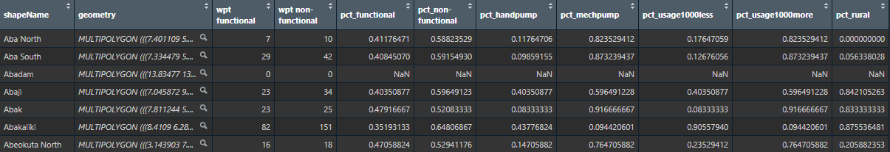
However it was also observed that there are some NaN values for some of the entries. this is because these entries had no water point and 0 divided by 0 will produce NaN values. to avoid errors in subsequent analysis, we will convert all the NaN values into 0 with the following code chunk.
nga_wp$pct_functional[is.nan(nga_wp$pct_functional)] <- 0
nga_wp$`pct_non-functional`[is.nan(nga_wp$`pct_non-functional`)] <- 0
nga_wp$pct_handpump[is.nan(nga_wp$pct_handpump)] <- 0
nga_wp$pct_mechpump[is.nan(nga_wp$pct_mechpump)] <- 0
nga_wp$pct_usage1000less[is.nan(nga_wp$pct_usage1000less)] <- 0
nga_wp$pct_usage1000more[is.nan(nga_wp$pct_usage1000more)] <- 0
nga_wp$pct_rural[is.nan(nga_wp$pct_rural)] <- 0we now double check that the data set is all cleaned up by checking the values from RStudio’s viewer.
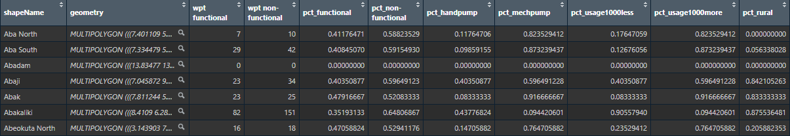All the values are now correct and we can move on to the next step.
It is assessed that there is a need to transform the data set to a projected coordinate system. The data set is currently is in WG84 which is a global coordinate system. the Global coordinate system views positions in 3D via longitude and latitude. This is not ideal for analysis that requires computation of distances like what we are intending to do. In comparison, a projected coordinate system which views positions in 2D with x and y axis would be more suitable and accurate (note that WG84 is able to form a psuedo 2d Map, however it would not be as accurate). hence we will transform the CRS to 26391 which pertains to Nigeria’s western belt.
After the new values had been added into nga_wp, we also want to know whats the percantage of functional vs non-functional water points. this can be done with the follow code chunk. we will also add the values into nga_wp before writing it to nga_wp.rds using write_rds()
Important: Github does not accept file sizes larger than 100 mb. At this point, we had filtered the data from the original 4.8 gb down to 2.1mb. we now need to set all the codes thus far not to evaluate (except the library codes) so that we can delete the large original source files which are too large to push.
Geographic segmentation divides a target market by location so marketers can better serve customers in a particular area. This type of market segmentation is based on the geographic units themselves (countries, states, cities, etc.), but also on various geographic factors, such as climate, cultural preferences, populations, and more.
Cluster analysis or Clustering is the task of grouping a set of an object in such a way object in the same group(called cluster) are more similar( in some sense or another to each other than to those in another group (clusters). They are generally 2 types of clustering, non-spatial and spatial. we would be doing analysis on the data set with both types for this study. First, let us read back the data file we had cleaned up.
On initial runs of the subsequent codes, it was discovered that there is an entry with no neighbors, which caused errors when trying to calculate variables for hierarchical clustering, as the requirement is to have minimally 1 neighbor. as such, the follow code was later added in to drop the single entry with no neighbor. the entry is row 86, from visually checking the data set, it belongs to Bakassi.
We would visualisethe water points in both histogram as well as Choropleth mapping. The histogram is used ot check if they are following a normal Gaussian distribution while the Choropleth is just a sanity check to make sure that the data set is displaying correctly on the maps as well as to get a rough sensing of the distribution of the various values. the following code chunk is used to draw out the histogram
wpf <- ggplot(data=nga_wp,
aes(x=`wpt functional`)) +
geom_histogram(bins=20,
color="black",
fill="light blue")
pcf <- ggplot(data=nga_wp,
aes(x=`pct_functional`)) +
geom_histogram(bins=20,
color="black",
fill="light blue")
wpnf <- ggplot(data=nga_wp,
aes(x=`wpt non-functional`)) +
geom_histogram(bins=20,
color="black",
fill="light blue")
pcnf <- ggplot(data=nga_wp,
aes(x=`pct_non-functional`)) +
geom_histogram(bins=20,
color="black",
fill="light blue")
pchp <- ggplot(data=nga_wp,
aes(x=`pct_handpump`)) +
geom_histogram(bins=20,
color="black",
fill="light blue")
pcmp <- ggplot(data=nga_wp,
aes(x=`pct_mechpump`)) +
geom_histogram(bins=20,
color="black",
fill="light blue")
pcu1l <- ggplot(data=nga_wp,
aes(x=`pct_usage1000less`)) +
geom_histogram(bins=20,
color="black",
fill="light blue")
pcu1m <- ggplot(data=nga_wp,
aes(x=`pct_usage1000more`)) +
geom_histogram(bins=20,
color="black",
fill="light blue")
pcu <- ggplot(data=nga_wp,
aes(x=`pct_rural`)) +
geom_histogram(bins=20,
color="black",
fill="light blue")
ggarrange(wpf, pcf, wpnf, pcnf, pchp, pcmp, pcu1l, pcu1m, pcu,
ncol = 2,
nrow = 5)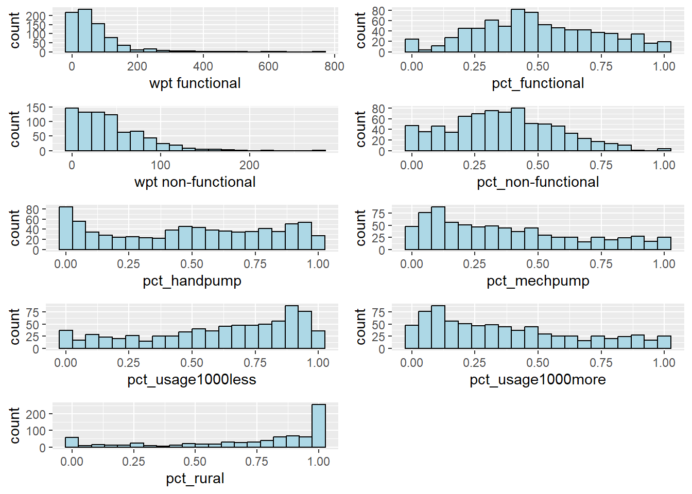
From the above histograms, we can confirm that most of the variables do not follow a normal distribution, except pct_functional and pct_non-functional.
Choropleth map is used to examine the distribution of attributes over the studied areas. The density of the values is displayed based on the intensity of the color. In the maps below, we will use tm_shape(), tm_borders(), tm_fill() and tm_arrange() from tmap package to draw the choropleth map.
funcmap <- tm_shape(nga_wp) +
tm_fill(col = "wpt functional", n = 5, style = "jenks", title = "Functional WP", palette = "GnBu") +
tm_borders(alpha = 0.5) +
tm_layout(legend.width = 0.3,
legend.height = 0.3,
legend.text.size = 0.5)
nfuncmap <- tm_shape(nga_wp) +
tm_fill(col = "wpt non-functional", n = 5, style = "jenks", title = "Non-functional WP") +
tm_borders(alpha = 0.5) +
tm_layout(legend.width = 0.3,
legend.height = 0.3,
legend.text.size = 0.5)
funcpmap <- tm_shape(nga_wp) +
tm_fill(col = "pct_functional", n = 5, style = "jenks",
title = "Functional WP Percentage", palette = "GnBu") +
tm_borders(alpha = 0.5) +
tm_layout(legend.width = 0.3,
legend.height = 0.3,
legend.text.size = 0.5)
nfuncpmap <- tm_shape(nga_wp) +
tm_fill(col = "pct_non-functional", n = 5, style = "jenks", title = "Non-functional WP Percentage") +
tm_borders(alpha = 0.5) +
tm_layout(legend.width = 0.3,
legend.height = 0.3,
legend.text.size = 0.5)
handpmap <- tm_shape(nga_wp) +
tm_fill(col = "pct_handpump", n = 5, style = "jenks",
title = "Hand Pump Percentage", palette = "BuPu") +
tm_borders(alpha = 0.5) +
tm_layout(legend.width = 0.3,
legend.height = 0.3,
legend.text.size = 0.5)
mecpmap <- tm_shape(nga_wp) +
tm_fill(col = "pct_mechpump", n = 5, style = "jenks",
title = "Mechanized Pump Percentage", palette = "BuPu") +
tm_borders(alpha = 0.5) +
tm_layout(legend.width = 0.3,
legend.height = 0.3,
legend.text.size = 0.5)
less1000pmap <- tm_shape(nga_wp) +
tm_fill(col = "pct_usage1000less", n = 5, style = "jenks",
title = ">=1000 Cap Percentage", palette = "PuBuGn") +
tm_borders(alpha = 0.5) +
tm_layout(legend.width = 0.3,
legend.height = 0.3,
legend.text.size = 0.5)
more1000pmap <- tm_shape(nga_wp) +
tm_fill(col = "pct_usage1000more", n = 5, style = "jenks",
title = "<1000 Cap Percentage", palette = "PuBuGn") +
tm_borders(alpha = 0.5) +
tm_layout(legend.width = 0.3,
legend.height = 0.3,
legend.text.size = 0.5)
ruralpmap <- tm_shape(nga_wp) +
tm_fill(col = "pct_rural", n = 5, style = "jenks",
title = "Rural Percentage", palette = "BuGn") +
tm_borders(alpha = 0.5) +
tm_layout(legend.width = 0.3,
legend.height = 0.3,
legend.text.size = 0.5)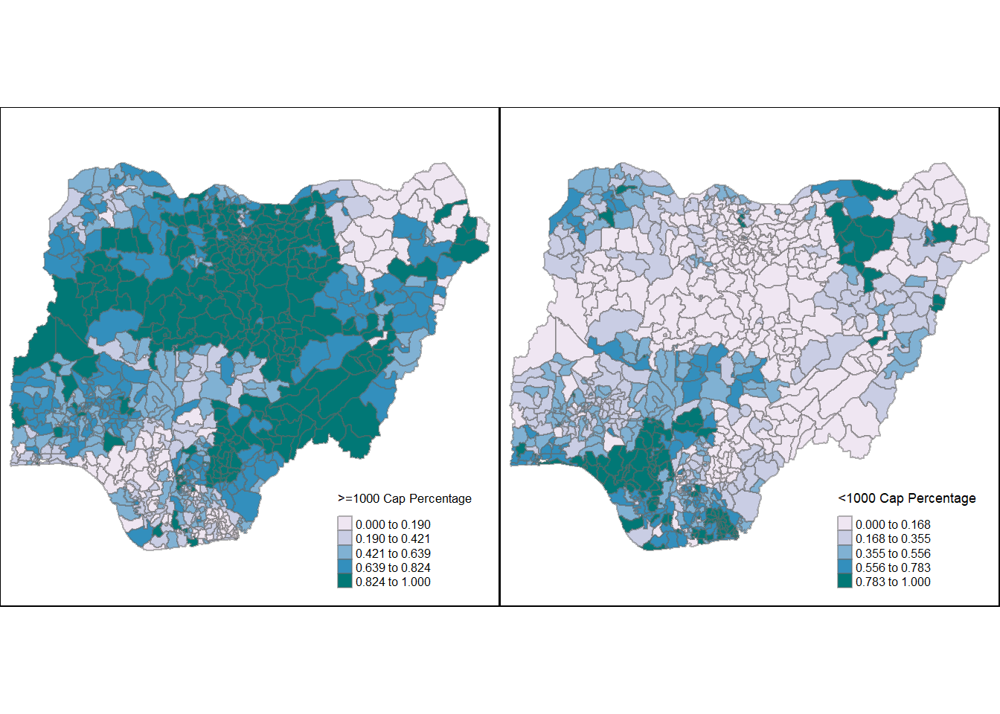
We can see that most of the functional water points are concentrated at the northern to north-eastern side of the country, while the non-functional ones are mainly in the center region to the south-western regions. Also, hand pump percentage seems to be very similar to water usage above 1000. Rural areas are spread out across the country, what is concerning is that many of the rural areas overlap with extremely high non-functional water points.
When clustering variables are collinear, it means that they refer to the same observation if both variables are kept for clustering analysis, the observation will now have more weightage than the other variables akin to double counting. the results of the analysis will likely be skewed, overshadowing other observations which might be important. Hence there is a need to check for Collinearity before doing any cluster analysis. cor() and corrplot.mixed function from the corrplot package would be used to visualise and identify highly correlated variables.
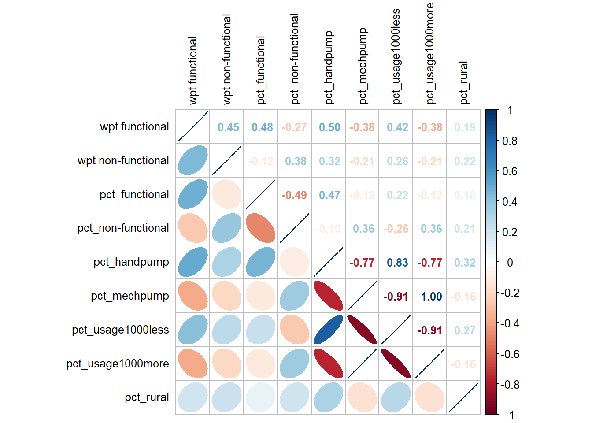
From the Multivarate correlation table, we can see that some of the variables are highly correlated with other variables (<+/-80) as follows:
It is also interesting to note that pct_mechpump is perfectly correlated with pct_usage1000more. this seems to suggest that availability of good water extraction technology will encourage better usage of the water points.
| Variable Name | Correlated with 1 | Correlated with 2 |
|---|---|---|
| pct_handpump | pct_usage1000less | |
| pct_mechpump | pct_usage1000less | pct_usage1000more |
| pct_usage1000less | pct_usage1000more |
Based on the table, the single most corrleated variable is pcy_usage1000less, followed by pct_usage1000more, than pct_mechpump and pct_handpump. we would drop pct_usage1000less and pct_mechpump. pct_usage1000more is not dropped as i do not want to totally drop all the variables from the usage grouping.
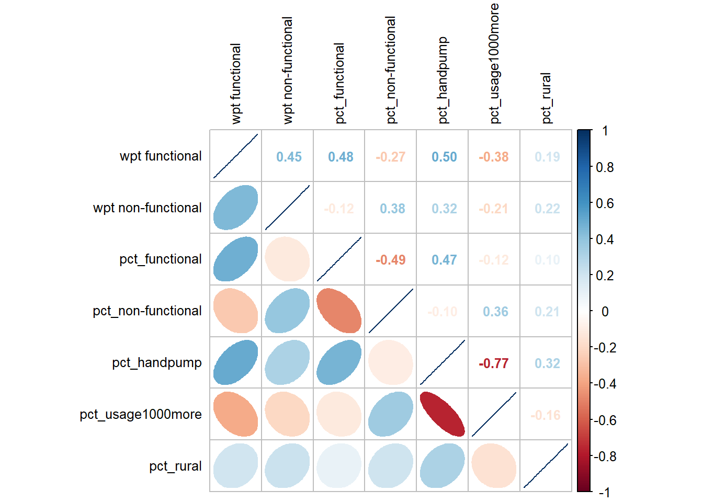
The variables are no longer colinear, now we move on the change the header. There is a need to change shift the shapName as the index and drop all other unused columns because the statistical functions expects the data to only consist of values to be used in the analysis. there will be errors if this step is not done.
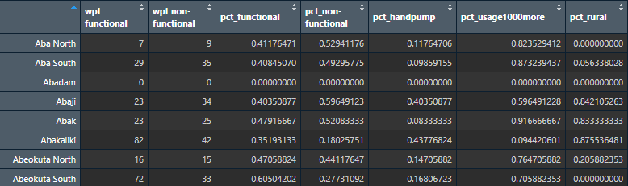
As the variance between some of the variables can be quite big. we will not normalise them using normalize() of heatmaply.
wpt functional wpt non-functional pct_functional pct_non-functional
Min. :0.00000 Min. :0.00000 Min. :0.0000 Min. :0.0000
1st Qu.:0.02261 1st Qu.:0.04676 1st Qu.:0.3276 1st Qu.:0.2105
Median :0.06117 Median :0.12230 Median :0.4745 Median :0.3505
Mean :0.08969 Mean :0.14982 Mean :0.4991 Mean :0.3597
3rd Qu.:0.11702 3rd Qu.:0.21942 3rd Qu.:0.6699 3rd Qu.:0.5078
Max. :1.00000 Max. :1.00000 Max. :1.0000 Max. :1.0000
pct_handpump pct_usage1000more pct_rural
Min. :0.0000 Min. :0.0000 Min. :0.0000
1st Qu.:0.1681 1st Qu.:0.1223 1st Qu.:0.5743
Median :0.5099 Median :0.3129 Median :0.8646
Mean :0.4879 Mean :0.3759 Mean :0.7280
3rd Qu.:0.7778 3rd Qu.:0.5789 3rd Qu.:1.0000
Max. :1.0000 Max. :1.0000 Max. :1.0000 Hierarchical Cluster is one of many unsupervised machine learning methods used to find meaning and relationships between the values in a dataset and group them into clusters. Hierarchical Clustering has 2 approaches.
Agglomerative: A bottom up approach where the clustering starts with individual data points and iterartively joining like points until it forms one large cluster
Divisive: A top-down approach where the clustering starts as one large cluster and iteratively splits into smaller clusters based on dissimilarity.
Note that in both cases, hierarchy clustering does not automatically give the ideal number of clusters as we have the freedom to slice the output dendrogram at any cluster level. so additional methods would need to be applied to find out the most ideal level of clusters to slice
In order to proceed with the clustering, we first need to forma proximity matrix for the data set using the dist() function.
A variety of clustering algorithm can be used to carry out the hierarchical clustering. However R provides a convenient way for us to compare and select between them via the agnes() function from the Cluster package.
average single complete ward
0.9089063 0.8042648 0.9407452 0.9906288 From the above output, we can conclude that Ward method is the best for our study.
Next, we will use the Gap Statistic Method to determine the optimal cluster. The clusGap() function from the Cluster package can be used for this purpose
Clustering Gap statistic ["clusGap"] from call:
clusGap(x = nga_wp_cluster.std, FUNcluster = hcut, K.max = 10, B = 50, nstart = 25)
B=50 simulated reference sets, k = 1..10; spaceH0="scaledPCA"
--> Number of clusters (method 'firstmax'): 10
logW E.logW gap SE.sim
[1,] 5.111085 5.637022 0.5259375 0.008737235
[2,] 4.901652 5.527000 0.6253475 0.011961923
[3,] 4.804576 5.470399 0.6658223 0.008775311
[4,] 4.700529 5.421745 0.7212161 0.008798820
[5,] 4.643738 5.383205 0.7394678 0.008703878
[6,] 4.591471 5.350108 0.7586376 0.007614926
[7,] 4.543514 5.321374 0.7778598 0.008346943
[8,] 4.512391 5.296951 0.7845600 0.008846119
[9,] 4.481538 5.276606 0.7950686 0.009012709
[10,] 4.442457 5.258394 0.8159375 0.008839626The above output indicates that 10 is the optimum value for clustering. we will do an additional step to visualising the information for easier reading using fviz_gap_stat() function
We are looking for the highest value. Similarly, the most optimal number of clusters is 10.
Now we can map the dendrogram with the optimal cluster and method with the following code chunk
The advantage of a spatially constrained clustering method is that it requires the cluster to be geographically related. we will be exploring the data set with 2 types of spatially constrained clustering methods, SKATER and the ClustGeo method, starting with SKATER first. The skater() function can be found in the spdep package. SKATER has 5 main steps:
Convert simple feature into spatial polygon data frame
Compute neighbor list
Compute minimum spanning tree
Compute spatially constrained clusters
Visualise the clusters
First, we need to convert shan_sf into SpatialPolygonsDataFrame. This is because SKATER function only support sp objects such as SpatialPolygonDataFrame. The code chunk below uses as_spatial of sf package.
Next we need the neighbor list. In the first run, we noticed that there is an LGA without any neighbor. it has since been dropped earlier in the codes.
Neighbour list object:
Number of regions: 773
Number of nonzero links: 4440
Percentage nonzero weights: 0.7430602
Average number of links: 5.743855
Link number distribution:
1 2 3 4 5 6 7 8 9 10 11 12 14
2 14 57 125 182 140 122 72 41 12 4 1 1
2 least connected regions:
137 559 with 1 link
1 most connected region:
507 with 14 linksWe can now plot the neighbours list by using the code chunk below. Since we now can plot the community area boundaries as well, we plot this graph on top of the map. The first plot command gives the boundaries. This is followed by the plot of the neighbor list object, with coordinates applied to the original SpatialPolygonDataFrame to extract the centroids of the polygons. These are used as the nodes for the graph representation. We also set the color to blue and specify add=TRUE to plot the network on top of the boundaries.
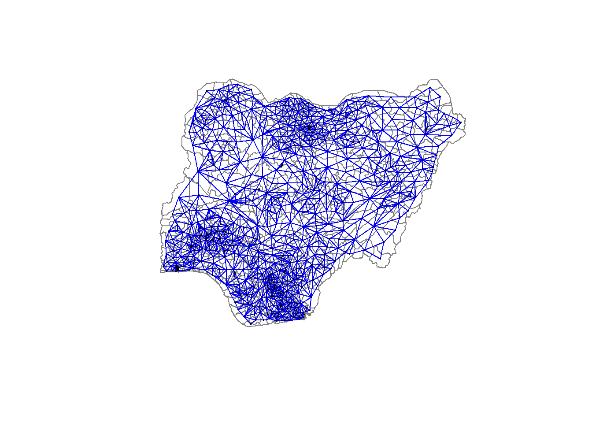
Note that if you plot the network first and then the boundaries, some of the areas will be clipped. This is because the plotting area is determined by the characteristics of the first plot. In this example, because the boundary map extends further than the graph, we plot it first.
nbcosts() from spdep package will be used to calculate the edge cost of each tree, which is the distance between the nodes. This function compute this distance using a data.frame with observations vector in each node. The code chunk below is used to compute the cost of each edge.
For each observation, this gives the pairwise dissimilarity between its values on the five variables and the values for the neighbouring observation (from the neighbour list). Basically, this is the notion of a generalised weight for a spatial weights matrix.
Next, We will incorporate these costs into a weights object in the same way as we did in the calculation of inverse of distance weights. In other words, we convert the neighbour list to a list weights object by specifying the just computed lcosts as the weights. In order to achieve this, nb2listw() of spdep package is used as shown in the code chunk below.
Note that we specify the style as B to make sure the cost values are not row-standardised.
Characteristics of weights list object:
Neighbour list object:
Number of regions: 773
Number of nonzero links: 4440
Percentage nonzero weights: 0.7430602
Average number of links: 5.743855
Link number distribution:
1 2 3 4 5 6 7 8 9 10 11 12 14
2 14 57 125 182 140 122 72 41 12 4 1 1
2 least connected regions:
137 559 with 1 link
1 most connected region:
507 with 14 links
Weights style: B
Weights constants summary:
n nn S0 S1 S2
B 773 597529 2319.537 3229.368 34805.67The minimum spanning tree can then be computed by mean of the mstree() of spdep package as shown in the code chunk below.
[1] "mst" "matrix"[1] 772 3Note that the dimension is 54 and not 55. This is because the minimum spanning tree consists on n-1 edges (links) in order to traverse all the nodes. We can display the content by using head() as shown in the code chunk below.
[,1] [,2] [,3]
[1,] 142 224 0.4428090
[2,] 224 704 0.2378245
[3,] 224 221 0.2671396
[4,] 221 517 0.1418633
[5,] 224 382 0.3339451
[6,] 382 131 0.3999034The plot method for the MST include a way to show the observation numbers of the nodes in addition to the edge. As before, we plot this together with the township boundaries. We can see how the initial neighbor list is simplified to just one edge connecting each of the nodes, while passing through all the nodes.
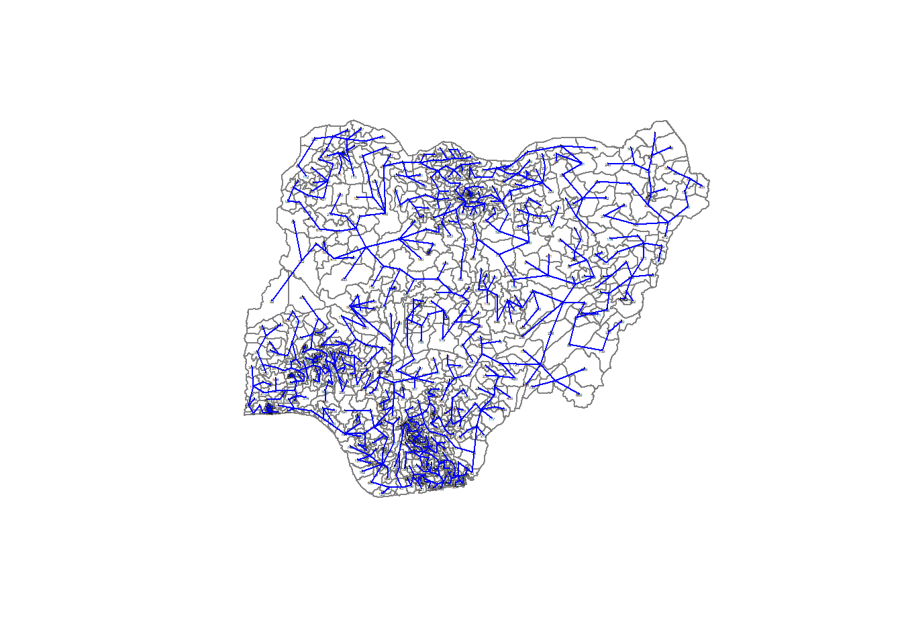
Since our data set has over 700 rows of data, such a representation is hardly useful. we will instead use Choropleth map to visualise it again.
We will use the skater() function of spdep package to compute the cluster, based on the earlier analysis from hierarchical clustering, we will set the cluster to be 10.
Important to note the following:
The skater() takes three mandatory arguments: - the first two columns of the MST matrix (i.e. not the cost), - the data matrix (to update the costs as units are being grouped), and - the number of cuts.
It is set to one less than the number of clusters. So, the value specified is not the number of clusters, but the number of cuts in the graph, one less than the number of clusters.
The result of the skater() is an object of class skater. We can examine its contents by using the code chunk below.
List of 8
$ groups : num [1:773] 2 2 4 3 2 6 3 3 6 2 ...
$ edges.groups:List of 10
..$ :List of 3
.. ..$ node: num [1:14] 766 382 131 224 142 221 413 704 765 252 ...
.. ..$ edge: num [1:13, 1:3] 131 382 704 224 413 224 221 142 766 224 ...
.. ..$ ssw : num 6.11
..$ :List of 3
.. ..$ node: num [1:80] 103 34 42 558 202 586 537 207 732 374 ...
.. ..$ edge: num [1:79, 1:3] 364 550 202 10 632 215 10 623 330 324 ...
.. ..$ ssw : num 33.6
..$ :List of 3
.. ..$ node: num [1:130] 15 82 351 213 175 543 557 315 316 195 ...
.. ..$ edge: num [1:129, 1:3] 31 93 435 523 4 560 209 210 43 156 ...
.. ..$ ssw : num 66.3
..$ :List of 3
.. ..$ node: num [1:22] 387 439 525 270 90 145 159 249 251 260 ...
.. ..$ edge: num [1:21, 1:3] 387 387 270 439 387 525 525 491 439 145 ...
.. ..$ ssw : num 12.6
..$ :List of 3
.. ..$ node: num [1:122] 597 368 357 459 29 172 71 70 609 549 ...
.. ..$ edge: num [1:121, 1:3] 597 275 459 597 277 172 29 17 35 71 ...
.. ..$ ssw : num 53.8
..$ :List of 3
.. ..$ node: num [1:122] 680 415 236 162 723 469 420 132 734 739 ...
.. ..$ edge: num [1:121, 1:3] 466 415 764 63 496 158 499 253 686 469 ...
.. ..$ ssw : num 49.9
..$ :List of 3
.. ..$ node: num [1:36] 651 672 436 691 147 130 481 427 74 700 ...
.. ..$ edge: num [1:35, 1:3] 740 261 108 481 130 149 427 74 456 147 ...
.. ..$ ssw : num 14.2
..$ :List of 3
.. ..$ node: num [1:16] 579 51 622 692 461 49 32 296 681 325 ...
.. ..$ edge: num [1:15, 1:3] 692 32 579 692 51 296 622 325 681 460 ...
.. ..$ ssw : num 5.51
..$ :List of 3
.. ..$ node: num [1:188] 471 479 688 228 447 730 421 155 492 747 ...
.. ..$ edge: num [1:187, 1:3] 138 447 450 730 492 747 155 663 263 488 ...
.. ..$ ssw : num 72.4
..$ :List of 3
.. ..$ node: num [1:43] 19 375 727 578 617 23 536 188 308 293 ...
.. ..$ edge: num [1:42, 1:3] 23 536 578 188 617 291 290 578 308 293 ...
.. ..$ ssw : num 19.8
$ not.prune : NULL
$ candidates : int [1:10] 1 2 3 4 5 6 7 8 9 10
$ ssto : num 477
$ ssw : num [1:10] 477 447 407 392 379 ...
$ crit : num [1:2] 1 Inf
$ vec.crit : num [1:773] 1 1 1 1 1 1 1 1 1 1 ...
- attr(*, "class")= chr "skater"Note that the groups vector contain the labels of the cluster to which each observation belongs
[1] 2 2 4 3 2 6 3 3 6 2 3 3 5 6 3 5 5 6 10 5 6 8 10 9 2
[26] 3 3 5 5 5 3 8 9 2 5 6 3 5 5 3 5 2 3 5 5 3 9 7 8 9
[51] 8 10 10 10 2 6 3 3 9 3 6 8 6 7 7 2 5 3 6 5 5 5 5 7 9
[76] 6 6 10 10 10 9 3 1 9 9 9 9 6 6 4 6 9 3 6 9 9 9 9 6 9
[101] 6 2 2 9 5 6 9 7 9 9 9 7 9 6 7 9 6 6 5 3 3 9 5 9 3
[126] 9 9 9 9 7 1 6 3 3 2 2 9 9 6 9 9 1 9 9 4 9 7 9 7 9
[151] 9 9 9 9 9 3 3 6 4 9 3 6 6 10 9 9 9 2 6 5 5 5 5 5 3
[176] 3 5 5 3 2 5 3 2 5 5 5 5 10 3 2 5 10 10 10 3 3 3 3 3 3
[201] 2 2 2 3 3 8 2 2 3 3 3 6 3 10 2 6 6 9 9 9 1 6 6 1 9
[226] 9 7 9 9 9 6 9 9 9 6 6 9 5 6 4 9 9 6 9 2 6 6 7 4 7
[251] 4 1 6 9 9 3 9 9 6 4 7 3 9 7 9 9 6 6 9 4 9 6 6 5 5
[276] 5 5 5 3 5 5 5 3 2 2 6 2 3 5 10 10 10 10 5 5 8 5 5 5 5
[301] 5 5 5 5 3 9 3 10 10 10 3 10 2 3 3 3 3 5 5 2 3 3 9 2 8
[326] 3 5 5 6 2 3 2 2 3 3 6 2 5 3 5 5 5 5 7 5 5 5 3 9 2
[351] 3 3 5 5 5 5 5 9 5 5 6 6 2 2 2 5 2 5 3 3 2 9 5 2 10
[376] 5 5 6 9 6 9 1 6 9 7 9 4 9 6 6 6 5 9 9 9 9 9 9 4 9
[401] 5 9 5 9 4 7 6 6 9 6 9 9 1 9 6 3 9 9 9 6 9 9 9 9 9
[426] 6 7 3 2 9 9 9 9 9 3 7 3 3 4 6 9 8 9 9 3 4 9 9 9 9
[451] 6 9 3 6 6 7 6 3 5 8 8 6 6 6 5 6 5 9 6 5 9 4 9 4 9
[476] 1 9 4 9 6 7 9 3 9 9 6 9 9 9 9 4 9 9 9 9 6 2 2 6 9
[501] 6 9 9 2 5 4 5 4 5 5 6 6 9 8 9 6 1 9 3 3 3 3 3 4 4
[526] 9 2 9 9 10 10 6 6 10 10 10 2 2 2 10 6 10 3 6 6 6 2 3 5 2
[551] 2 6 6 3 5 5 3 2 5 3 3 10 3 3 5 5 5 6 3 3 3 2 2 2 6
[576] 6 6 10 8 6 5 5 5 2 3 2 3 6 3 5 3 5 5 5 3 2 5 5 5 6
[601] 10 3 2 2 3 5 3 5 5 10 5 2 10 2 2 2 10 10 3 3 3 8 2 5 6
[626] 3 3 3 3 2 2 2 5 5 10 3 5 5 5 9 6 3 5 3 1 6 9 9 9 3
[651] 7 9 9 9 6 9 9 9 7 9 9 3 9 5 5 9 9 3 6 3 7 7 6 9 6
[676] 6 9 9 9 6 8 7 9 7 7 6 3 9 3 9 7 8 5 3 9 2 9 6 9 7
[701] 7 9 6 1 9 9 9 3 6 9 9 9 7 10 10 3 2 3 3 2 3 2 6 2 2
[726] 3 10 2 2 9 10 2 2 6 6 3 2 10 6 7 3 9 9 3 3 3 9 6 9 6
[751] 7 9 7 5 5 6 6 6 9 9 3 6 6 6 1 1 9 9 9 9 6 9 9we can check the number of observations and the dimension of each vector using table
Finally we can plot the pruned tree of the five clusters on top of the map
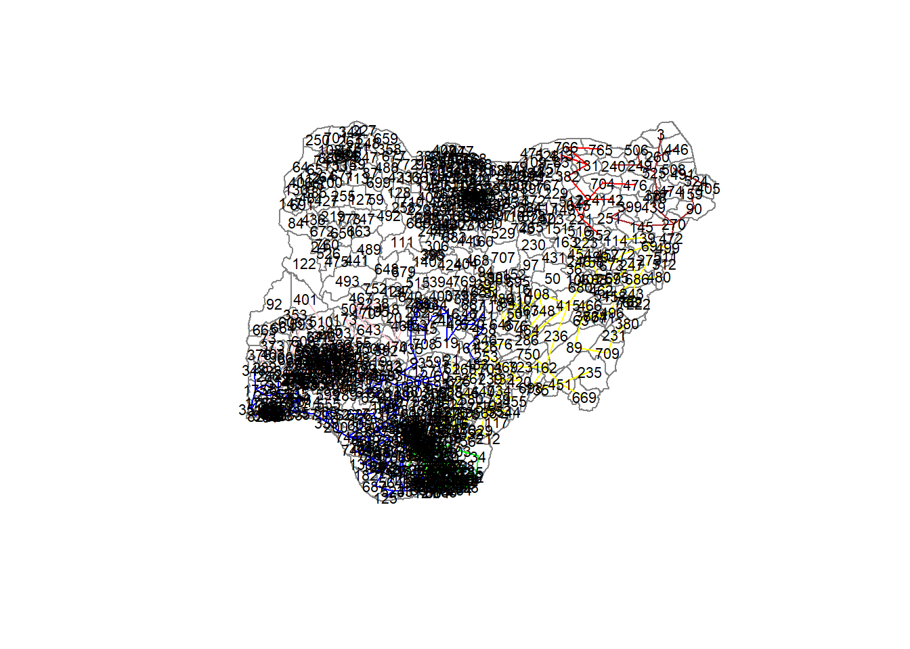
Then we can also vsiualise the clusters in choropleth map
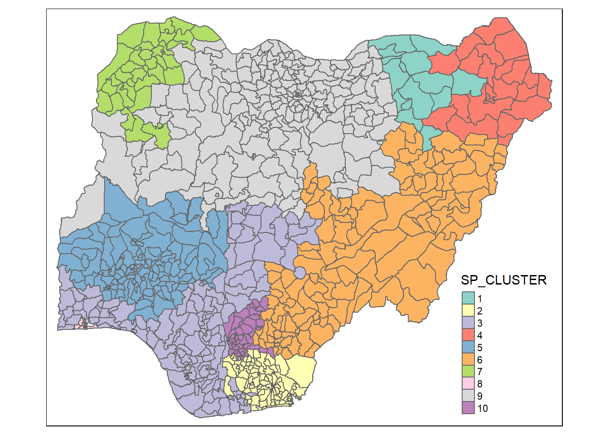
We now take a moment to compare between hierarchy clustering and SKATER method.
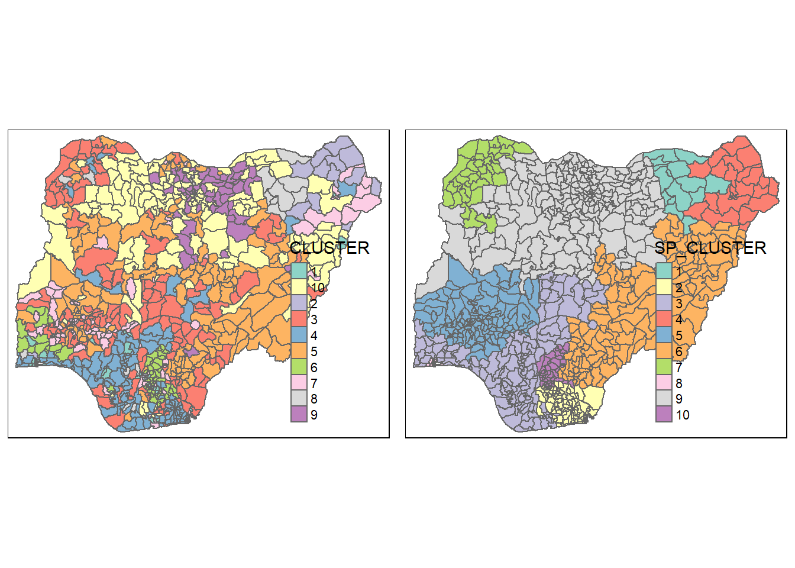
As we can see, Hierarchy clustering is too messy with the clusters all around the space while Spatially constrained SKATER is clustered according ton contiguous areas. we will drop Hierarchy clustering from here on and try ClustGeo method to see how it compares against SKATER
The following paras will use the ClustGeo package to perform spatially constrained hierarchical cluster analysis and spatially constrained cluster analysis. ClustGeo is an R package specially designed to support the need of performing spatially constrained cluster analysis. Notably it provides a Ward-like clustering algorithm called hclustgeo() which includes spatial/geographical constraints.
The 1st step is to provide the function a dissimilarity matrix which can be easily derived with hclustgeo().
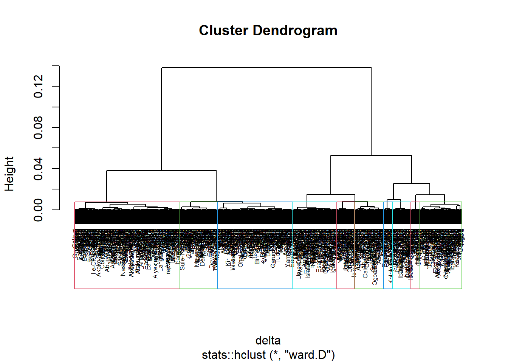
Note that the dissimilar matrix must be an object of class dist and this is usually obtained with the function dist() recall that we had earlier created one called proxmat.
Next, we simply map the clusters and visualise it
Now we would need to derive a spatial distance matrix first before we can perform spatially constrained hierarchical clustering. This is done using st_distance() of sf package
Next, choicealpha() will be used to determine a suitable value for the mixing parameter alpha
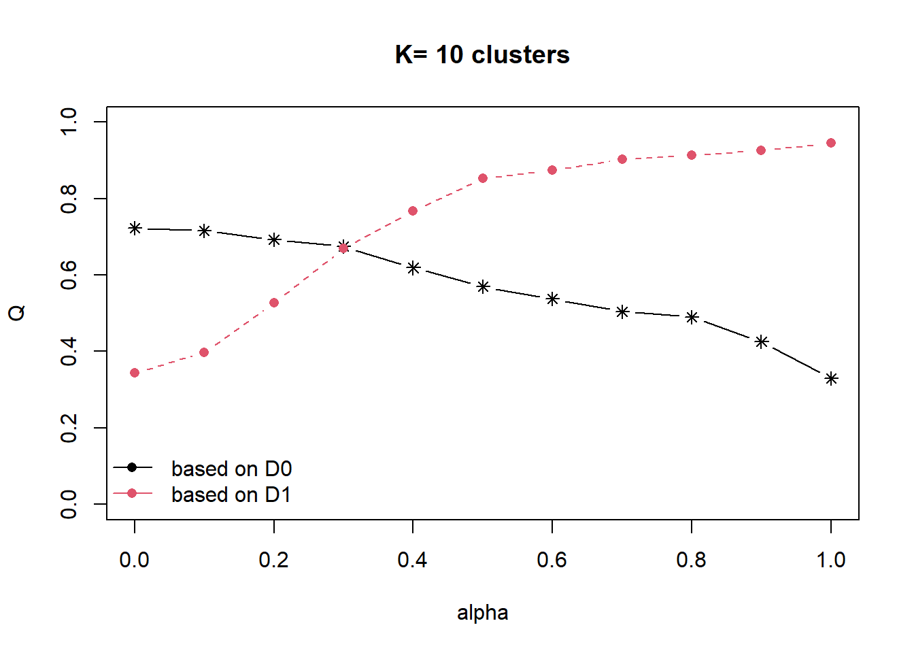
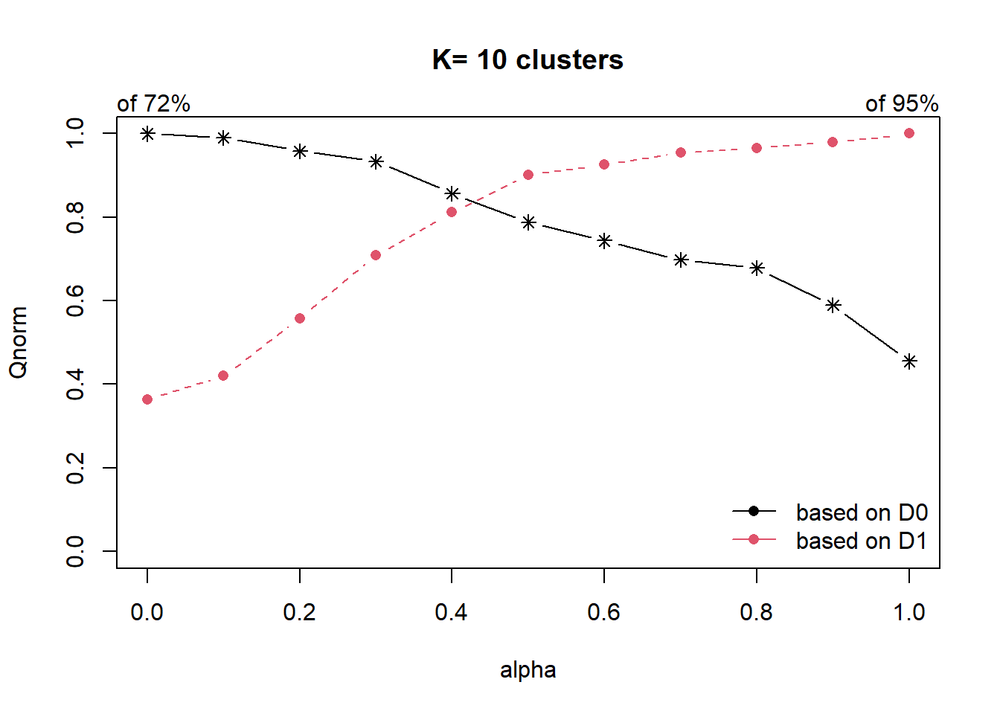
With reference to the graphs above, alpha 0.4 will be used in the following codes. (the intersection is around 0.4)
then cutree() is used to derive the cluster object
We will then join back the group list with shan_sf polygon feature data frame
Finally, we plot the map again of the newly delineated spatially constrained clusters
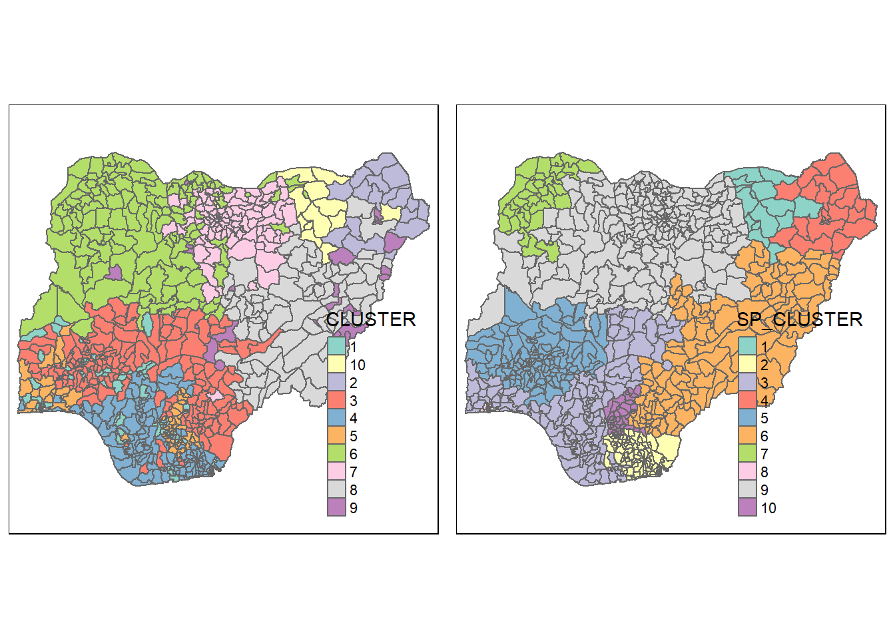
While we can see some improvements in terms of the clustering from ClustGeo compared to Hierarchical Cluster, SKATER still provides a far more understanding clustering, Hence we will decide to move ahead with SKATER for the next few analysis
Note: i had tried to use rows for facet_grid, but i ended up with very squished graphs which were unreadable, i was also unable to troubleshoot it despite spending alot of time on it, so i compromised and choose another way to display it which is at least somewhat readable
The study had provided us some insights on the water point distributions in Nigeria but arguably leaves us with more questions than it answered. There are many areas that could still be further improved if the results from such a GIS study is to be of practical use as follows:
Currency and accuracy of data: The data set from WPx actually contained a field that we did not use in the current study. it consisted of a staleness value which indicates when the water point was last checked. some of the water point data was acquired years ago and would have been outdated by now. water points may have dried up or new water points may have been opened. Using non current and inaccurate data for the basis of policy decision making does not give much confidence on the efficacy of the plans put forth and may end up wasting resources instead. The government should endeavour to check the water points frequent if it is serious about acting on the findings
Population: The current study does not cross reference with the population living in each LGA. having high number of water points may not be an accurate depiction of need if the population density of the LGA is immensely high. conversely a low number of water points may not matter if there is already no longer anybody living in the area; especially taking into the previous point that the data may already be outdated.
GDP: If the government want to be very shred with it’s investment of limited resources, it may also overlay the GDP data on the waterpoint to identify which LGAs may potentially provide the highest ROI for creating water points
Time lag: Another point we can consider is to collect long term data and track the changes of the water point over time. The current study has no knowledge on how water points are created. form the water point technology, it is assumed that wells are dug. tracking the presence of water points over time may give an idea of which areas are easier to create water points and which areas are conversely drying up and requiring different kind of interventions.